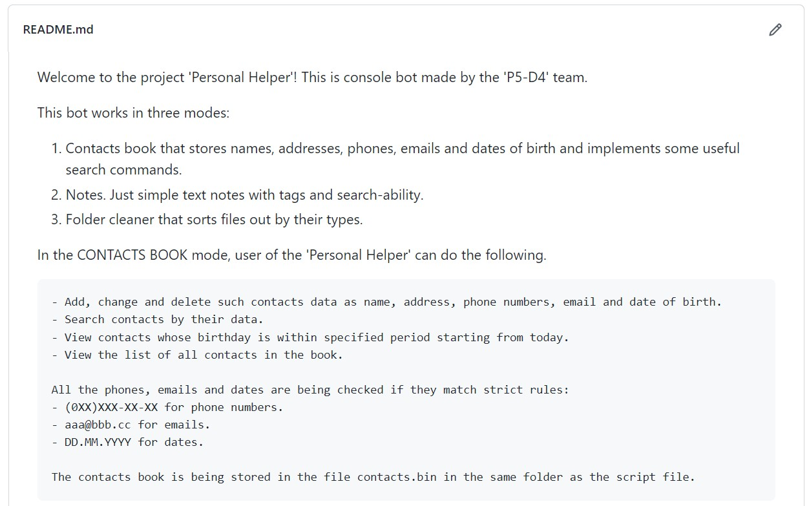

Personal Helper
2022
Console bot
This bot works in three modes: Contacts book that stores names, addresses, phones, emails and dates of birth and implements some useful search commands.
Just simple text notes with tags and search-ability. Folder cleaner that sorts files out by their types.

This bot works in three modes:
- Contacts book that stores names, addresses, phones, emails and dates of birth and implements some useful search commands
- Notes. Just simple text notes with tags and search-ability
- Folder cleaner that sorts files out by their types
In the CONTACTS BOOK mode, user of the 'Personal Helper' can do the following
- Add, change and delete such contacts data as name, address, phone numbers, email and date of birth
- Search contacts by their data
- View contacts whose birthday is within specified period starting from today
- View the list of all contacts in the book
All the phones, emails and dates are being checked if they match strict rules:
- (0XX)XXX-XX-XX for phone numbers
- aaa@bbb.cc for emails
- DD.MM.YYYY for dates
The contacts book is being stored in the file contacts.bin in the same folder as the script file
In the NOTES mode, user of the 'Personal Helper' can do the following
There will be automatically created folders for images, audio files, videos, documents and archives into the specified folder.
Files of corresponding types will be moved into these folders. Current folders structure will be retained.
All Cyrillic symbols in the names of the files and folders will be trnsliterated into Latin ones. Files of unknown types are being retained untouched.
To use this bot, you need simply download setup package with all necessary files from github. Package can be installed into system with a console command "python setup.py install". After that, you can run the bot using 'personal-helper' command in any place in the command line
'Personal Helper' communicates with a user through console commands. You can view them using command 'help' inside the bot or in the 'help.txt' file that is included into the package.
IMPORTANT! Delimiter symbol inside of all the commands is SPACE.
The bot uses Prompt Toolkit package that propose a list of commands by the first letters typed in the command line.
INSTALLATION:
'Personal Helper' is being distributed in the form of Python package.
You can install it using one of the following two commands in the directory with setup.py file:
pip install .
python setup.py install